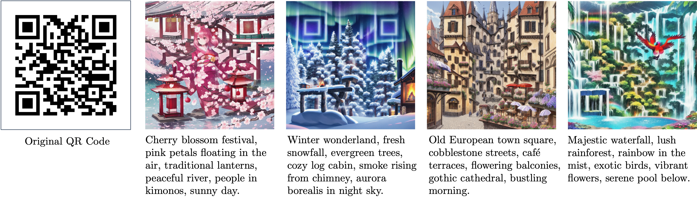
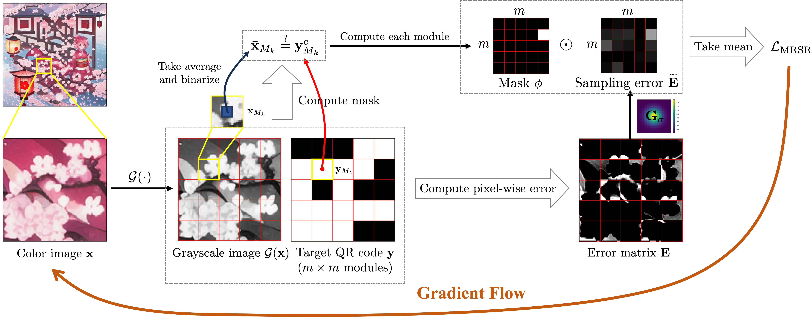
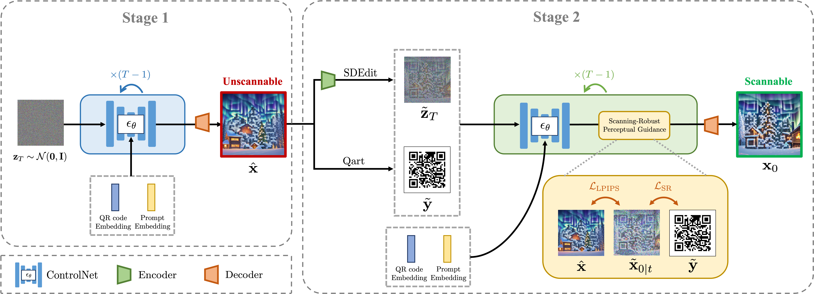
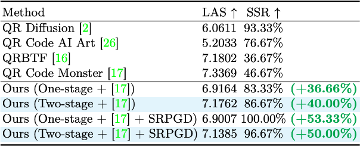
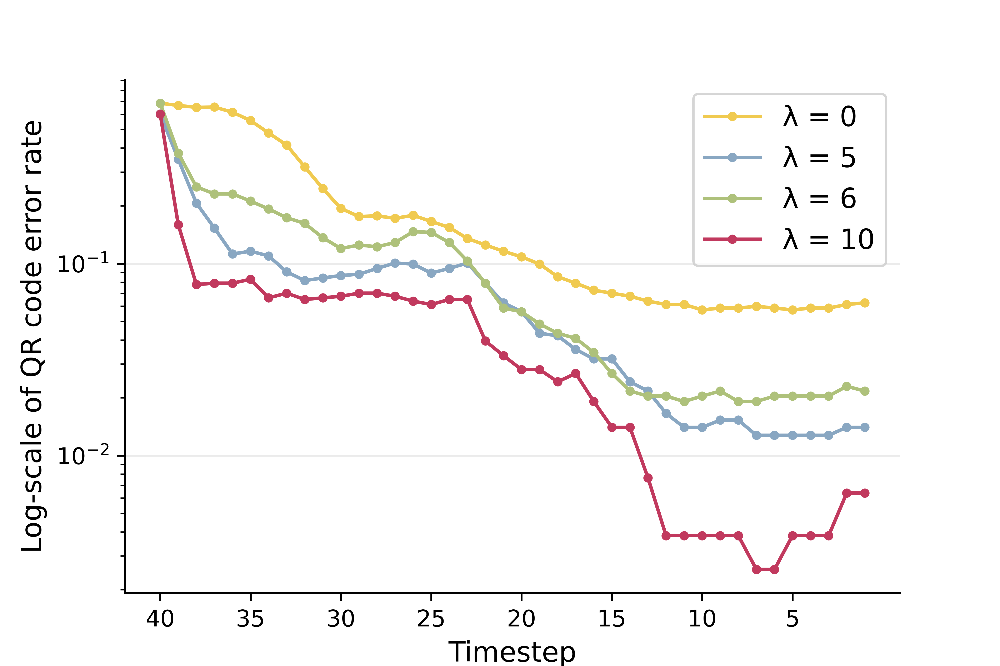
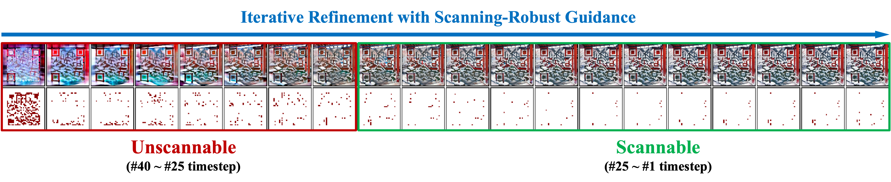
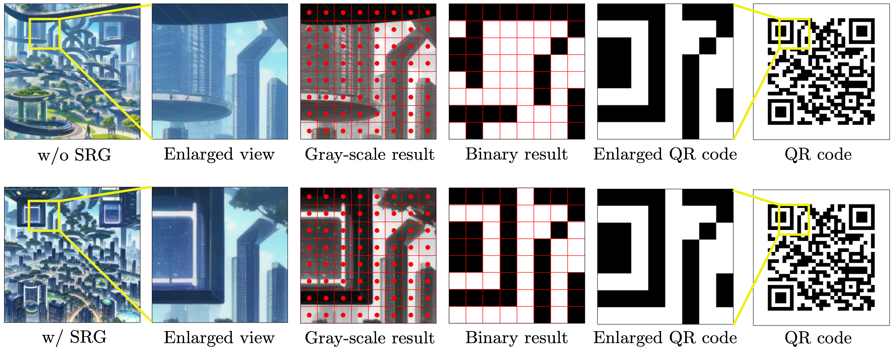

Leveraging the preeminent capability of Latent Diffusion Model (LDM) and ControlNet as a prior knowledge of aesthetic QR code images, coupled with our proposed Scanning-Robust (Perceptual) Guidance, we can generate custom-styled QR codes conform to user prompts while assuring both scannability and aesthetics.
Abstract
QR codes, prevalent in daily applications, lack visual appeal due to their conventional black-and-white design. Integrating aesthetics while maintaining scannability poses a challenge. In this paper, we introduce a novel diffusion-model-based aesthetic QR code generation pipeline, utilizing pre-trained ControlNet and guided iterative refinement via a novel classifier guidance (SRG) based on the proposed Scanning-Robust Loss (SRL) tailored with QR code mechanisms, which ensures both aesthetics and scannability. To further improve the scannability while preserving aesthetics, we propose a two-stage pipeline with Scanning-Robust Perceptual Guidance (SRPG). Moreover, we can further enhance the scannability of the generated QR code by postprocessing it through the proposed Scanning-Robust Projected Gradient Descent (SRPGD) post-processing technique based on SRL with proven convergence. With extensive quantitative, qualitative, and subjective experiments, the results demonstrate that the proposed approach can generate diverse aesthetic QR codes with flexibility in detail. In addition, our pipelines outperforming existing models in terms of Scanning Success Rate (SSR) 86.67% (+40%) with comparable aesthetic scores. The pipeline combined with SRPGD further achieves 96.67% (+50%).
Methodology

Scanning-Robust Loss (SRL). We emulate the scanning process using module pixel extraction and binarization to calculate the pixel-wise error matrix and module-wise optimization decision mask. Then we apply a Gaussian kernel to re-weight the error matrix. Finally, we mask the error matrix with the decision mask via Hadamard product, then take the average to form our SRL.

Iterative refinement with Scanning Robustness Guidance (SGD). First, we leverage pre-trained ControlNet to obtain the initial score prediction conditioned on the target QR code and user-specified prompt. During each denoising step, we approximate the original latent followed by DDIM formulation, then apply the VAE decoder to get the original image for SRL calculation. We utilize the gradient of SRL as a guidance term to update the predicted score. Repeat the above iterative refinement process until convergence.

Two-stage generation pipeline with Scanning-Robust Perceptual Guidance (SRPG). In Stage 1, we utilize the pre-trained plain ControlNet to generate an aesthetic yet unscannable sub-optimal QR code; In Stage 2, we first perform SDEdit to convert the sub-optimal QR code to latent space, then leverage Qart to merge with the target QR code, finally, we apply our proposed iterative refinement to produce aesthetic and scannable QR code.
Comparison Results

Comparisons with generative-based methods. The green box represents scannable images, while the red box indicates images that cannot be scanned.

Quantitative results of generative-based methods and our proposed pipeline. Improvements marked in green are compared with QR Code Monster.
Analytics
In Fig. (a), we compare the error rates of a sample with different SRG weights during iterative refinement steps. We observed that the error plunges within the first 5 iterations with SRG, whereas without SRG. Furthermore, we analyze the change in score magnitude of different SRG weights. We found that the score magnitude decreased over the iterations, indicating the guidance effects diminished over time. This trend is depicted in Fig. (b).

(a) QR code error rate.
We visualize the images at different timestep and their corresponding mismatched modules. The mismatched modules are marked in red, indicating the inconsistencies between scanner-decoded image and the target QR code, Initially, the image contains a plethora of mismatched modules, leading to the unscannable situation. However, the number of mismatched modules significantly decreases as the sampling process proceeds. Moreover, we can observe that the amount of mismatched modules plunges after certain sampling steps. This indicates that the mismatch rate falls within the QR code error-correction capacity, allowing the control reverting to the diffusion model to generate more appealing results.

We analyze the robustness of the generated results through error analysis. The scanning robustness can be maintained as long as the modules after sampling and binarization yield identical results as the target QR code regardless of pixel color changes within the modules. Our aesthetic QR codes exhibit irregular colors and shapes in their modules. Despite undergoing sampling and binarization, the module results remain consistent with the original QR code. This suggests that our aesthetic QR codes are robust and readable by a standard QR code scanner.
